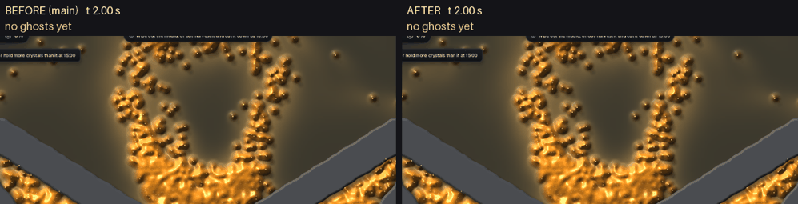

<title>Builders Raise From Reach</title>
<meta name="claude:viewport-fit-sides" content="cover">
<link rel="stylesheet" href="https://fonts.googleapis.com/css2?family=Space+Grotesk:wght@500;700&family=Inter:wght@400;600&display=swap">
<style>
/* One column of notes beside a wide clip; field-manual feel, olive like the soldiers' kit. */
:root {
  --bg: #f3f4ee; --fg: #1d2119; --muted: #5d6555; --line: #d3d8c8; --accent: #5f7a2e; --panel: #e8ebdf;
  --display: "Space Grotesk", "Segoe UI", system-ui, sans-serif;
  --body: "Inter", "Segoe UI", system-ui, sans-serif;
}
@media (prefers-color-scheme: dark) { :root:not([data-theme="light"]) { --bg: #151812; --fg: #e4e8dc; --muted: #9ba493; --line: #2f3529; --accent: #a7c46a; --panel: #1d2119; color-scheme: dark } }
:root[data-theme="dark"] { --bg: #151812; --fg: #e4e8dc; --muted: #9ba493; --line: #2f3529; --accent: #a7c46a; --panel: #1d2119; color-scheme: dark }
body { background: var(--bg); color: var(--fg); font-family: var(--body); line-height: 1.55; }
main { max-width: 960px; margin: 0 auto; padding-block: 28px 48px; padding-left: max(16px, env(safe-area-inset-left, 0px)); padding-right: max(16px, env(safe-area-inset-right, 0px)); display: grid; gap: 22px; }
h1, h2 { font-family: var(--display); text-wrap: balance; margin: 0; }
h1 { font-size: 1.8rem; }
h2 { font-size: 1.15rem; }
p, li { max-width: 68ch; margin: 0; }
ul { margin: 0; padding-left: 1.2em; display: grid; gap: 6px; }
.quote { color: var(--muted); border-left: 3px solid var(--accent); padding-left: 12px; }
figure { margin: 0; display: grid; gap: 8px; }
figure img { width: 100%; border-radius: 6px; border: 1px solid var(--line); }
figcaption { color: var(--muted); font-size: 0.9rem; }
.tablewrap { overflow-x: auto; }
table { border-collapse: collapse; font-variant-numeric: tabular-nums; min-width: 460px; }
th, td { text-align: left; padding: 6px 12px; border-bottom: 1px solid var(--line); }
th { font-weight: 600; color: var(--muted); font-size: 0.85rem; letter-spacing: 0.03em; text-transform: uppercase; }
section { display: grid; gap: 10px; }
code { background: var(--panel); padding: 1px 5px; border-radius: 4px; font-size: 0.9em; }
</style>
<main>
  <h1>Builders raise from reach and stay on their side</h1>
  <p class="quote">"I should be able to queue builds. Right now soilders center themselves on the build spot but it would be best if they just started building when the got in range. If I am building a turret enemy, I want to be able to keep my soliders on one side of the building turret." (owner, 14 Nov 08:10Z)</p>

  <figure>
    
    <figcaption>The Fork, seed 1, 2 to 12 s of game time, a quarter second a frame. At 2 s eight soldiers are ordered to the middle turret, then Shift-queue the left and right ones. Left: main before this change. Right: this change. The line under each side gives how built each turret is in that frame.</figcaption>
  </figure>

  <section>
    <h2>What changed</h2>
    <ul>
      <li>A builder walks straight at the ghost and starts raising as soon as it is 6 cells from the middle (from the line, for a wall). It no longer walks to a spot round the ghost.</li>
      <li>So a squad raising a turret stays on the side it came from. Nobody walks round to the side facing the slime, and nobody stands on the ghost.</li>
      <li>Shift + clicks queue builds. With soldiers selected, each one raises them in turn. With nobody selected, the one soldier sent for the first ghost queues the rest, instead of every ghost pulling another soldier.</li>
      <li>Squad mode: placing a build sends the controlled squad and ends any move it was on (before, the move took the order back). Shift + a build while the squad walks is raised when it gets there.</li>
    </ul>
  </section>

  <section>
    <h2>Where the builders stood</h2>
    <p>Eight soldiers from the larder to a turret 30 cells toward the mould, counted when it stands (game test on seed 15):</p>
    <div class="tablewrap">
      <table>
        <thead><tr><th></th><th>Before</th><th>After</th></tr></thead>
        <tbody>
          <tr><td>Builders past the ghost, on the slime's side</td><td>2 of 8</td><td>0 of 8</td></tr>
          <tr><td>Nearest builder to the ghost's middle</td><td>1.9 cells (on it)</td><td>3.5 cells</td></tr>
          <tr><td>Nearest builder when raising began</td><td>8.9 cells</td><td>7.9 cells</td></tr>
        </tbody>
      </table>
    </div>
    <p>Build times did not change: in the clip the three turrets stand at 6.25, 7.5 and 9.25 s on both sides. Raising already counted from about 9 cells before; what changed is where the builders stand while they work.</p>
  </section>
</main>
